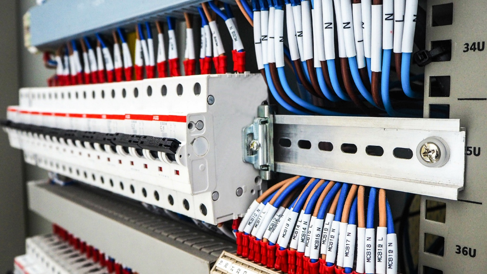
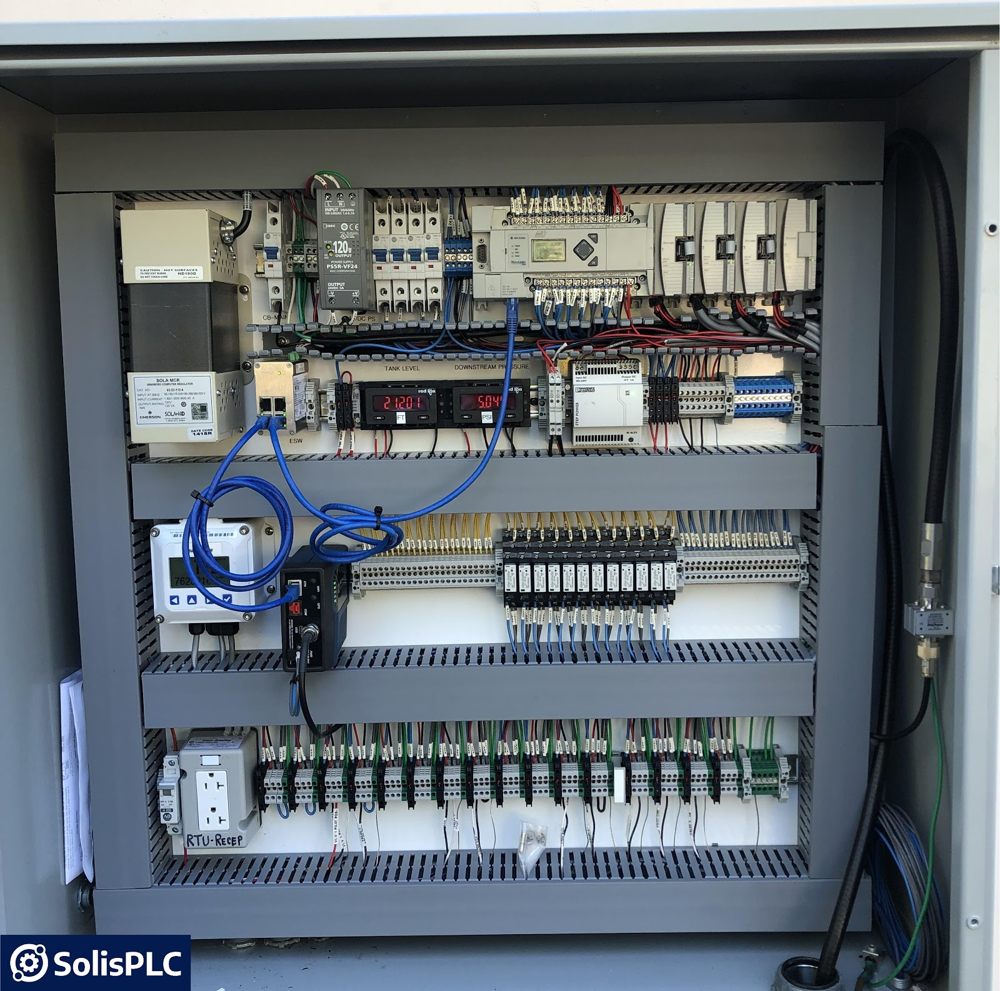

Discrete manufacturing
- Appliances
- Electronics
- Automotive parts
Industrial Internet Of Things
Easily integrate Srilee's Industrial IoT (IIoT) solution with your manufacturing equipment and shop floor systems. Automate factory operations and unlock increased visibility. Achieve enhanced efficiency and actionable insights based on real-time data.
Alert
Live OEE
21.2%Discrete manufacturing
Process manufacturing
Collect
Seamlessly collect data from all machines, devices and controllers.
Connect
Remotely manage your data through the Zoho Edge agent.

What Why How
Everything you need to explain, scale, and deploy industrial IoT quickly.
Industrial IoT solutions monitor, collect, exchange, and analyze real-time sensor data from equipment to deliver advanced analytics and shop-floor insights.
Industry 4.0 brings together IoT, AI, robotics, and connected automation to make manufacturing more responsive and efficient.
IIoT is easy to scale and deploy. It helps organizations:
Industry 4.0 is just a click away. Whether you want to monitor one machine or automate your entire factory, we've got you covered.


Platform
Collect, connect, and customize your factory data with one integrated stack.

A sneak peek into the world of Srilee IIoT
Connect to multiple brands and protocols across legacy and new equipment. Generate actionable insights from a few units or a few hundred.
Utilize the Srilee EdgeX edge computing solution for local actions, data filtering, and secure aggregation with continuous updates.
Integrate machine data with your digital factory using REST APIs, workflows, and analytics that give every stakeholder real-time visibility.
From machine monitoring to energy optimization, manage every production layer.
A detailed view of high-value assets in real time.
Reduce downtime and stoppages for production efficiency.
Evaluate OEE for greater productivity and throughput.
Keep track of shifts, jobs, and resources.
Predictive maintenance and work order automation.
Improve quality, energy, and safety outcomes.
Track power, water, and gas usage with live reporting.
Keep people and assets safe with continuous monitoring.
Measure what improves and spot what needs intervention before it becomes downtime.
IIoT partner program
We believe the key to industrial transformation is a collaborative partner ecosystem. Build incremental value for customers across the discrete manufacturing sector.